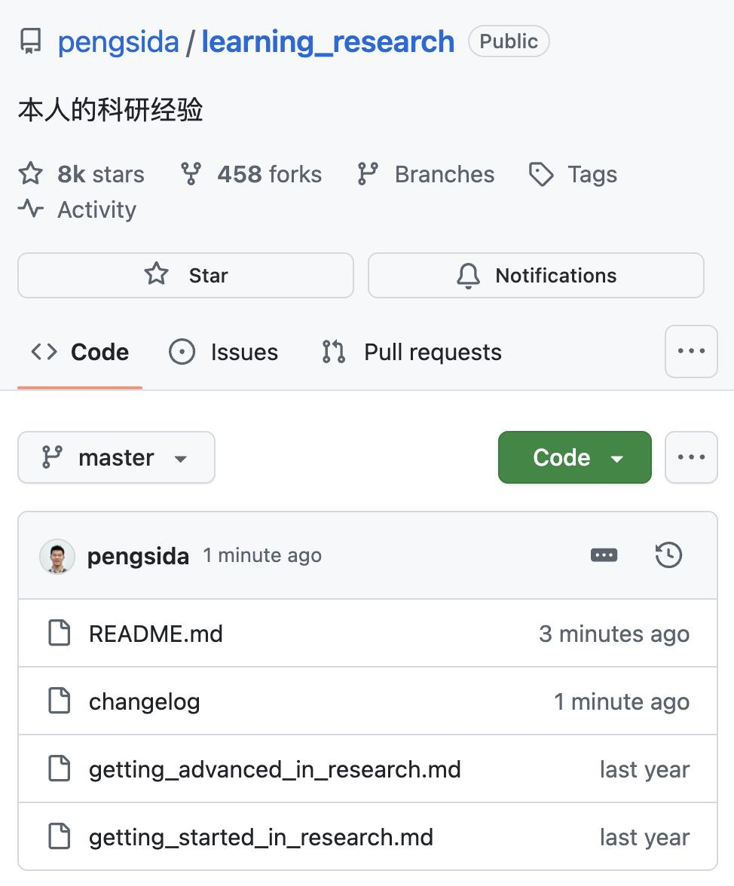
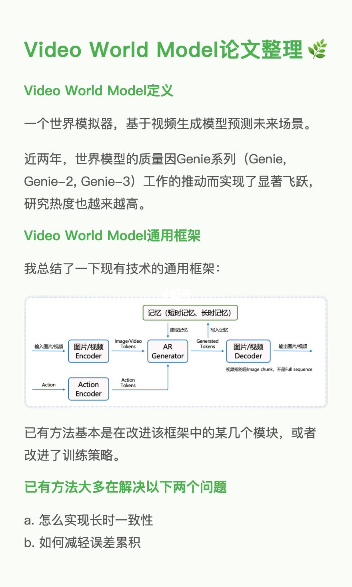
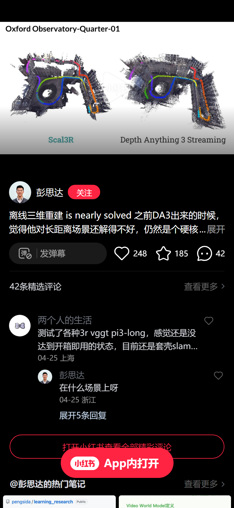

离线三维重建 is nearly solved
文章信息
文章内容
展开
离线三维重建 is nearly solved 之前DA3出来的时候，觉得他对长距离场景还解得不好，仍然是个硬核问题。 我们今年的Scal3R今年在各种长距离场景上吊打DA3，这个问题看来是被解掉了。 代码在GitHub上已开源：zju3dv/Scal3R。 Scal3R通过TTT把VGGT scale到长图片序列（10公里级别）。并且观察到，只要training infra够好，理论上就能在超长图片序列上训练，自然而然就能在超长图片序列上有个很好的效果。 我们在各种自采数据上测了，发现泛化效果都很好，包括以前一直觉得很难的室内无纹理反光场景。 Scal3R只是在几十张卡、在一些公开数据集上训练的，就有这样的效果了。 只要在更多的卡、更多的数据上训练，这个提升空间还很有想象力。 China3DV 2026上看到Andrea Vedaldi报告中VGGT-Omega的效果，也是有差不多的感觉。 接下来再把点云精度提一提，把下游的前馈高斯做好一些，离线三维重建真得就solved了。 #人工智能#深度学习#三维视觉#三维重建
展开
离线三维重建 is nearly solved 之前DA3出来的时候，觉得他对长距离场景还解得不好，仍然是个硬核问题。 我们今年的Scal3R今年在各种长距离场景上吊打DA3，这个问题看来是被解掉了。 代码在GitHub上已开源：zju3dv/Scal3R。 Scal3R通过TTT把VGGT scale到长图片序列（10公里级别）。并且观察到，只要training infra够好，理论上就能在超长图片序列上训练，自然而然就能在超长图片序列上有个很好的效果。 我们在各种自采数据上测了，发现泛化效果都很好，包括以前一直觉得很难的室内无纹理反光场景。 Scal3R只是在几十张卡、在一些公开数据集上训练的，就有这样的效果了。 只要在更多的卡、更多的数据上训练，这个提升空间还很有想象力。 China3DV 2026上看到Andrea Vedaldi报告中VGGT-Omega的效果，也是有差不多的感觉。 接下来再把点云精度提一提，把下游的前馈高斯做好一些，离线三维重建真得就solved了。 #人工智能#深度学习#三维视觉#三维重建
展开
原文配图
img-04.png

img-06.jpg

img-10.jpg
截图存档

screenshot-full.png

screenshot-page1.png